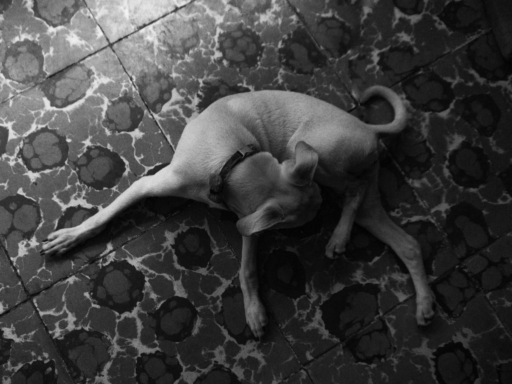
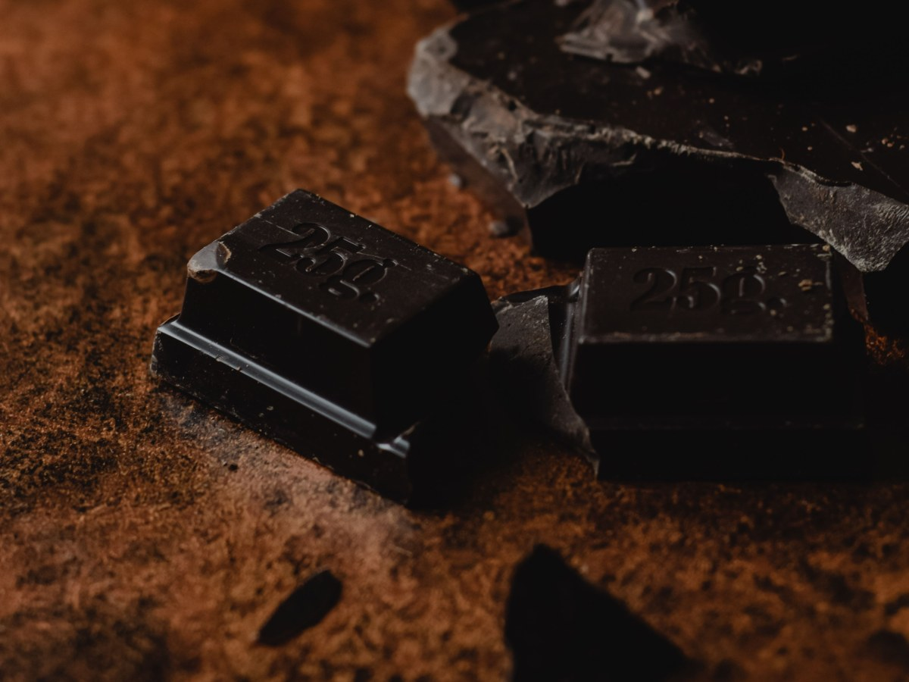
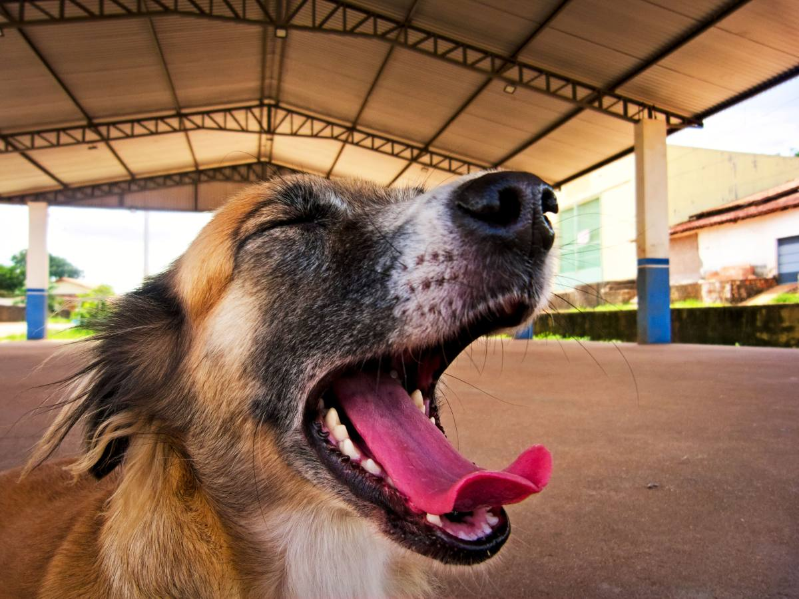
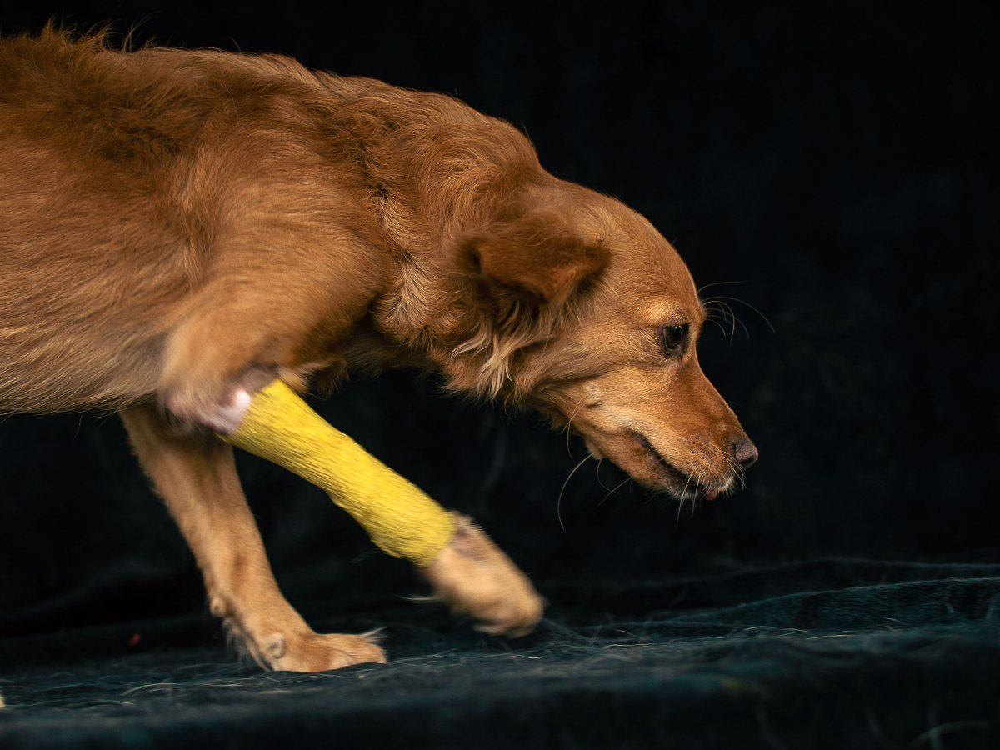
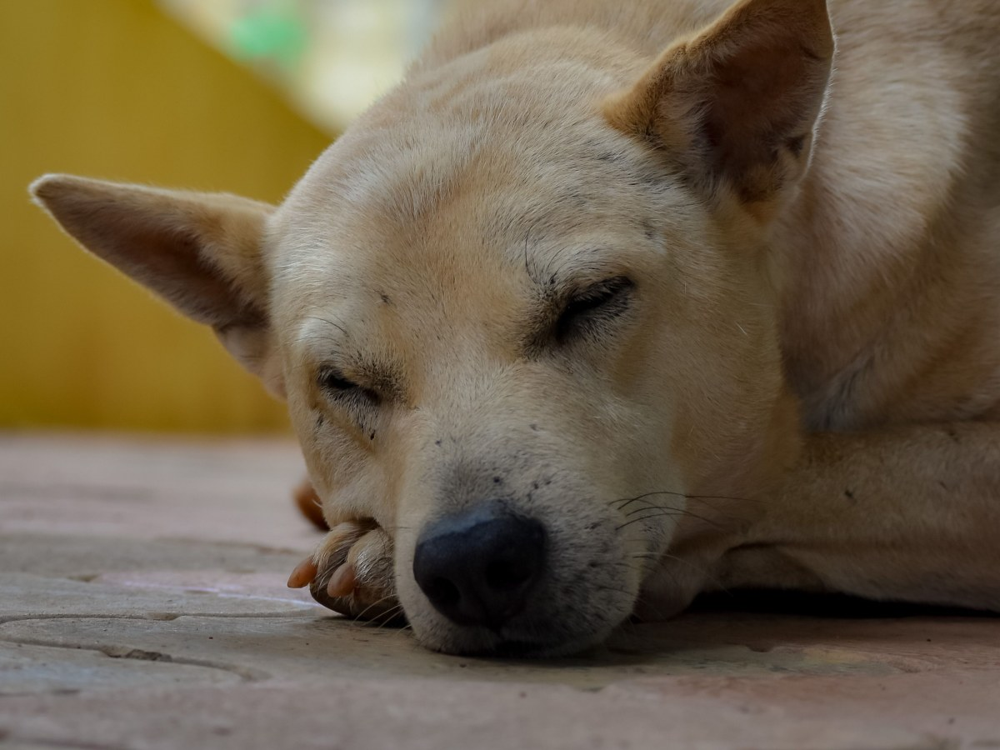
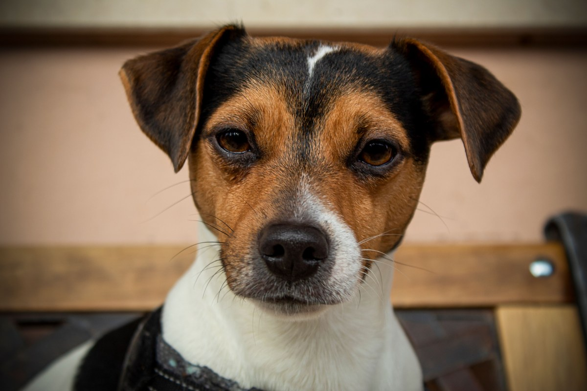
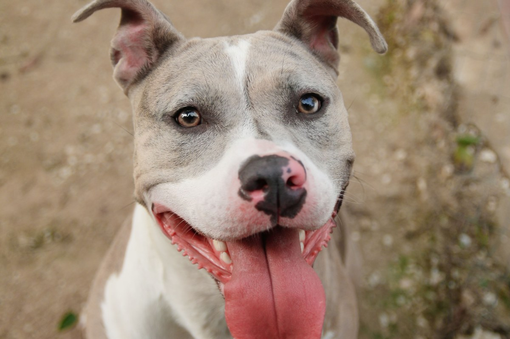
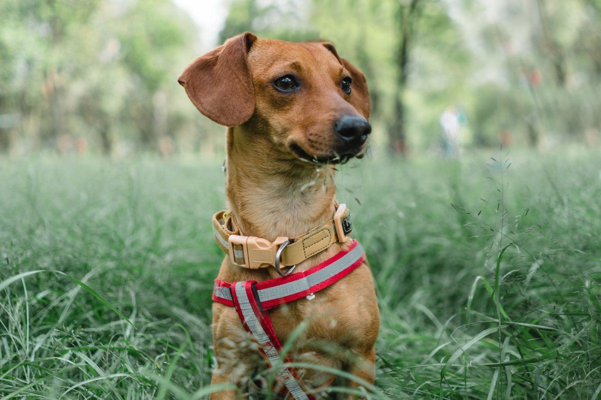
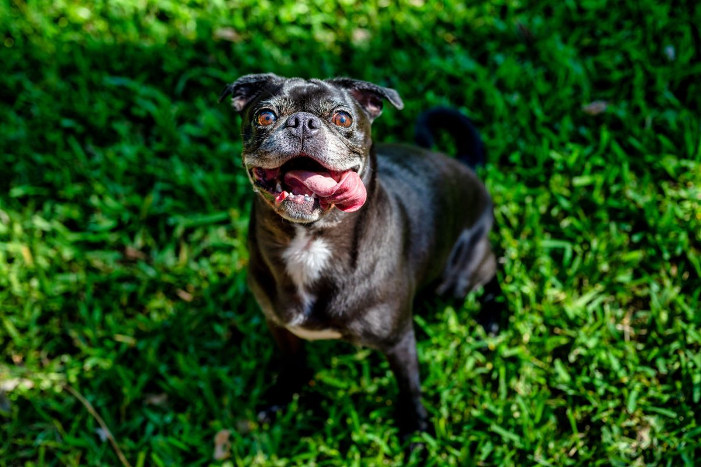
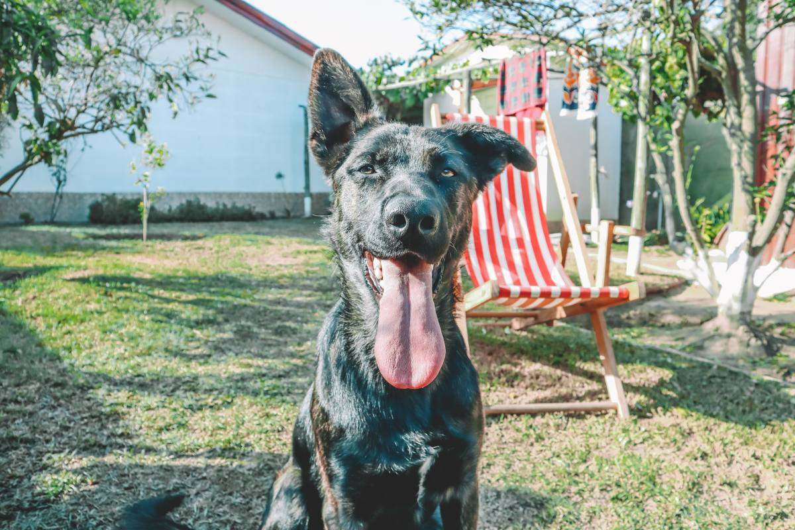

Clínica veterinaria · Valdivia
Los diez minutos antes de llegar cuentan.
Lo que hace en la casa cambia el resultado.
- 334reseñas en Google
- 4,6de nota
- 5urgencias, con su sí y su no
- 0páginas propias: su botón lleva a Facebook
El único tramo en que usted está solo
Qué hacer antes de llegar
En urgencias el error casi nunca es quedarse quieto: es hacer lo que se leyó en internet.
-

Atropello o caída
Sí: sobre una tabla, sin doblarlo. No: en brazos.
-

Se comió algo
Sí: guarde el envase y la hora. No: hacerlo vomitar.
-

Golpe de calor
Sí: agua fresca en patas y panza. No: hielo.
-

Herida que sangra
Sí: presión con un paño limpio. No: alcohol ni torniquete.
-

Convulsión
Sí: apague la luz y mire la hora. No: la mano en la boca.
Primeros auxilios: no reemplaza la consulta. Lo firma la clínica.
Llame mientras va en camino: la clínica prepara lo que viene.
Están en la cocina
Venenos de la casa
Paracetamol
Un comprimido puede matar a un gato.
Chocolate
Cuanto más amargo, peor.
Uvas y pasas
Pueden causar falla renal.
Cebolla y ajo
También en el guiso de la casa.
Xilitol
El de los chicles sin azúcar.
Anticongelante
Es dulce: por eso lo toman.
La completa la clínica.
Guarde el número antes de necesitarlo.
El consejo más aburrido
En la consulta
Los pacientes de Valdivia





Fotos de referencia: las de la clínica las pone la clínica.
Dónde estamos
Italia 1760, Valdivia
- Dirección
- Italia 1760, Valdivia
- Teléfono
- 63 220 4420
- Horario (AgendaPro)
- Lu a vi 10–13 y 15–20, sá 10–13 y 14–20
- Urgencias
- Falta confirmar
Si es urgencia, llame antes de salir y diga qué pasó en una frase.
Italia 1760, Valdivia Abrir en Google Maps
Para el dueño
Qué es real y qué falta
Lo verificado
El nombre, la dirección, el teléfono, las 334 reseñas con 4,6 y el horario de AgendaPro.
Lo de ejemplo
Los primeros auxilios y la lista de venenos: orientación general, a firmar por la clínica.
Lo que falta
Si atienden urgencias fuera de horario, y las fotos de la clínica.